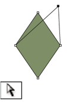
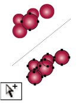
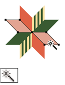

-
Direct Selection tool
The Direct Selection tool (A) selects points or path segments within objects.
 -
Group Selection tool
The Group Selection tool selects objects and groups within groups.
 -
Magic Wand tool
The Magic Wand tool (Y) selects objects with similar attributes.
 -
The Lasso tool
The Lasso tool (Q) selects points or path segments within objects.
-
Artboard tool
The Artboard tool creates separate artboards for printing or export.
-
Pen tool
The Pen tool draws straight and curved lines to create objects.
-
Add Anchor Point tool
The Add Anchor Point tool adds anchor points to paths.
-
Delete Anchor Point tool
The Delete Anchor Point tool deletes anchor points from paths.
-
Convert Anchor Point tool
The Convert Anchor Point tool changes smooth points to corner points and vice versa.
-
Line Segment tool
The Line Segment tool draws individual straight line segments.
-
Arc tool
The Arc tool draws individual concave or convex curve segments.
-
Spiral tool
The Spiral tool draws clockwise and counterclockwise spirals.
-
Rectangular Grid tool
The Rectangular Grid tool draws rectangular grids.
-
Polar Grid tool
The Polar Grid tool draws circular chart grids.
-
Rounded Rectangle tool
The Rounded Rectangle tool draws squares and rectangles with rounded corners.
-
Ellipse tool
The Ellipse tool draws circles and ovals
-
Star tool
The Star tool draws stars.
-
Flare tool
The Flare tool creates lens-flare or solar-flare-like effects.
-
Pencil tool
The Pencil tool draws and edits freehand lines.
-
Artboard tool
The Artboard tool creates separate artboards for printing or export.
-
Smooth tool
The Smooth tool smooths Bezier paths.
-
Path Eraser tool
The Path Eraser tool erases paths and anchor points from the object.
-
Perspective Grid tool
The Perspective Grid allows creating and rendering artwork in perspective
-
Perspective Selection tool
The Perspective Selection tool allows you to bring objects, text, and symbols in perspective, move objects in perspective, move objects in perpendicular to its current direction.
-
Type tool
The Type tool creates individual type and type containers and lets you enter and edit type.
-
Area Type tool
The Area Type tool changes closed paths to type containers and lets you enter and edit type within them.
-
Vertical Area Type tool
The Vertical Area Type tool changes closed paths to vertical type containers and lets you enter and edit type within them.
-
Type On A Path tool
The Type On A Path tool changes paths to type paths, and lets you enter and edit type on them.
-
Vertical Type On A Path tool
The Vertical Type On A Path tool changes paths to vertical type paths and lets you enter and edit type on them.
-
Paintbrush tool
The Paintbrush tool draws freehand and calligraphic lines, as well as art, patterns, and bristle brush strokes on paths.
-
Mesh tool
The Mesh tool creates and edits meshes and mesh envelopes.
-
Gradient tool
The Gradient tool adjusts the beginning and ending points and angle of gradients within objects, or applies a gradient to objects.
-
Eyedropper tool
The Eyedropper tool samples and applies color, type, and appearance attributes, including effects, from objects.
-
Live Paint Bucket tool
The Live Paint Bucket tool paints faces and edges of Live Paint groups with the current paint attributes.
-
Live Paint Selection tool
The Live Paint Selection tool selects faces and edges within Live Paint groups.
-
Measure tool
The Measure tool measures the distance between two points.
-
Blob Brush tool
The Blob Brush tool draws paths that automatically expand and merge calligraphic brush paths that share the same color and are adjacent in stacking order.
-
Rotate tool
The Rotate tool rotates objects around a fixed point.
-
Reflect tool
The Reflect tool flips objects over a fixed axis.
-
Shear tool
The Shear tool skews objects around a fixed point.
-
Scale tool
The Scale tool resizes objects around a fixed point.
-
Reshape tool
The Reshape tool adjusts selected anchor points while keeping the overall detail of the path intact.
-
Free Transform tool
The Free Transform tool scales, rotates, or skews a selection.
-
Blend tool
The Blend tool creates a series of objects blended between the color and shape of multiple objects.
-
Width tool
The Width tool allows you to create a stroke with variable width.
-
Warp tool
The Warp tool molds objects with the movement of the cursor (like molding clay, for example).
-
Twirl tool
The Twirl tool creates swirling distortions within an object.
-
Pucker tool
The Pucker tool deflates an object by moving control points towards the cursor.
-
Bloat tool
The Bloat tool inflates an object by moving control points away from the cursor.
-
Scallop tool
The Scallop tool adds random curved details to the outline of an object.
-
Crystallize tool
The Crystallize tool adds random spiked details to the outline of an object.
-
Wrinkle tool
The Wrinkle tool adds wrinkle-like details to the outline of an object.
-
Artboard tool
The Artboard tool creates separate artboards for printing or export.
-
Shape Builder tool
The Shape Builder tool merges simple shapes to create custom, complex shapes.
-
Symbol Sprayer tool
The Symbol Sprayer tool places multiple symbol instances as a set on the artboard.
-
Symbol Shifter tool
The Symbol Shifter tool moves symbol instances and change stacking order.
-
Symbol Scruncher tool
The Symbol Scruncher tool moves symbol instances closer together or farther apart.
-
Symbol Sizer tool
The Symbol Sizer tool resizes symbol instances.
-
Symbol Spinner tool
The Symbol Spinner tool rotates symbol instances.
-
Symbol Stainer tool
The Symbol Stainer tool colorizes symbol instances.
-
Symbol Screener tool
The Symbol Screener tool applies opacity to symbol instances.
-
Symbol Shifter tool
The Symbol Shifter tool moves symbol instances and change stacking order.
-
Symbol Styler tool
The Symbol Styler tool applies the selected style to symbol instances.
-
Column Graph tool
The Column Graph tool creates graphs that compare values using vertical columns.
-
Stacked Column Graph tool
The Stacked Column Graph tool creates graphs that are similar to column graphs, but stacks the columns on top of one another, instead of side by side. This graph type is useful for showing the relationship of parts to the total.
-
Bar Graph tool
The Bar Graph tool creates graphs that are similar to column graphs, but positions the bars horizontally instead of vertically.
-
Stacked Bar Graph tool
The Stacked Bar Graph tool creates graphs that are similar to stacked column graphs, but stacks the bars horizontally instead of vertically.
-
Line Graph tool
The Line Graph tool creates graphs that use points to represent one or more sets of values, with a different line joining the points in each set. This type of graph is often used to show the trend of one or more subjects over a period of time.
-
Area Graph tool
The Area Graph tool creates graphs that are similar to line graphs, but emphasizes totals as well as changes in values.
-
Scatter Graph tool
The Scatter Graph tool creates graphs that plot data points as paired sets of coordinates along the x and y axes. Scatter graphs are useful for identifying patterns or trends in data. They also can indicate whether variables affect one another
-
Pie Graph tool
The Pie Graph tool creates circular graphs whose wedges represent the relative percentages of the values compared.
-
Radar Graph tool
The Radar Graph tool creates graphs that compare sets of values at given points in time or in particular categories, and is displayed in a circular format. This type of graph is also called a web graph.
-
Hand tool
The Hand tool moves the Illustrator artboard within the illustration window.
-
Print Tiling tool
The Print Tiling tool adjusts the page grid to control where artwork appears on the printed page.
-
Zoom tool
The Zoom tool increases and decreases the view magnification in the illustration window.